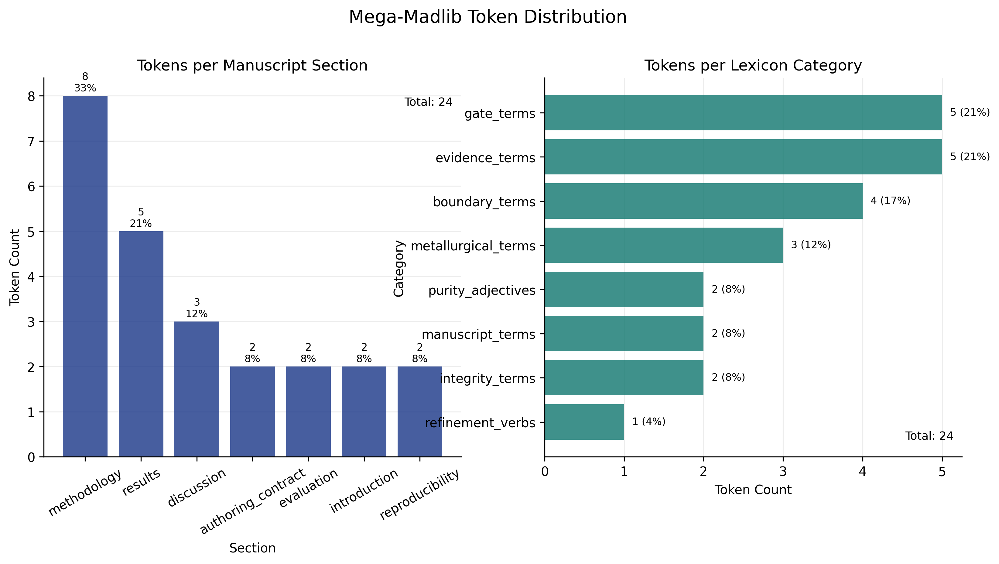
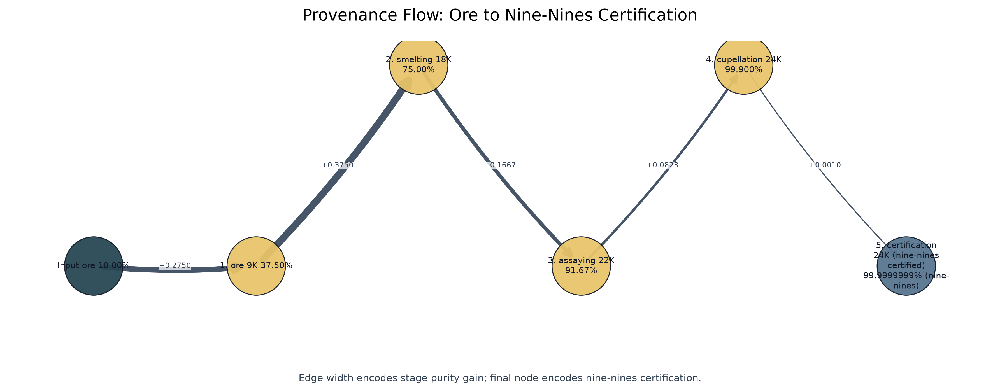
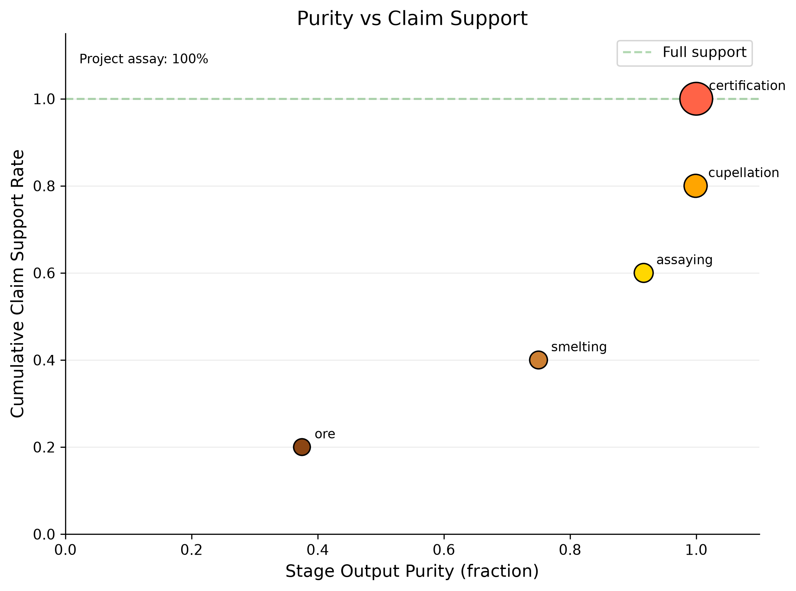
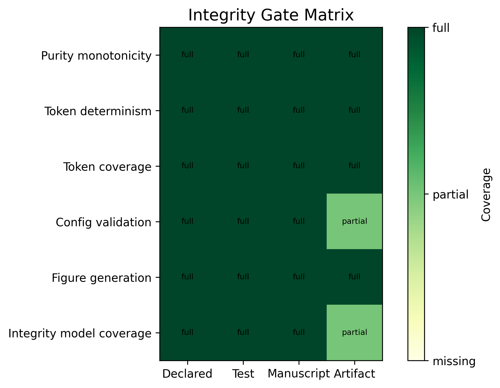
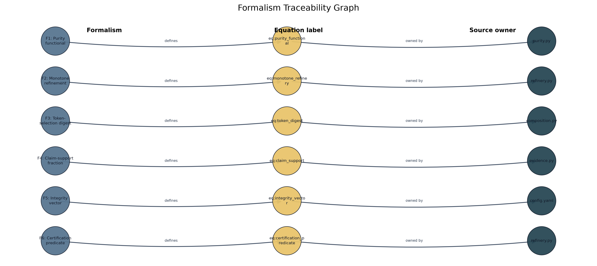
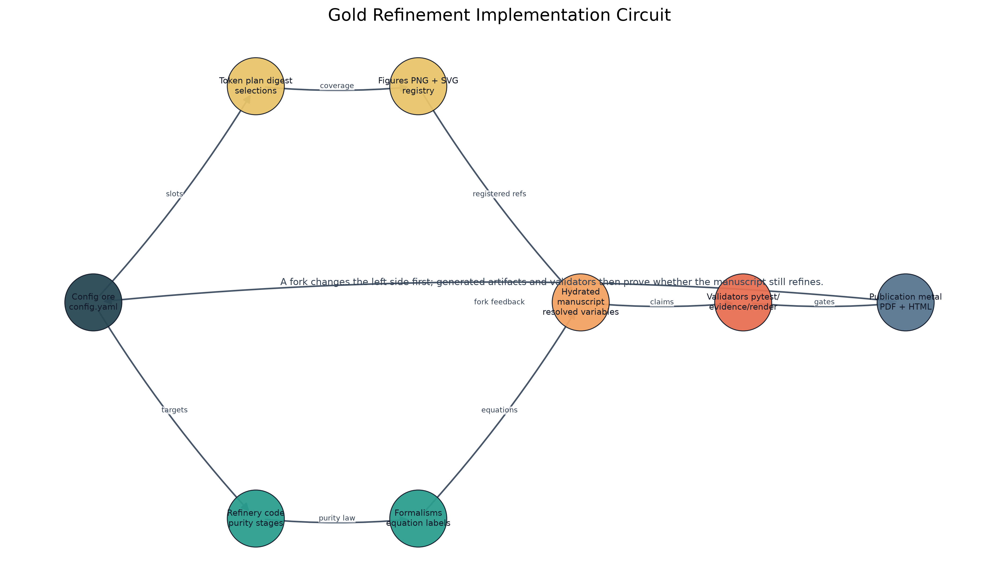
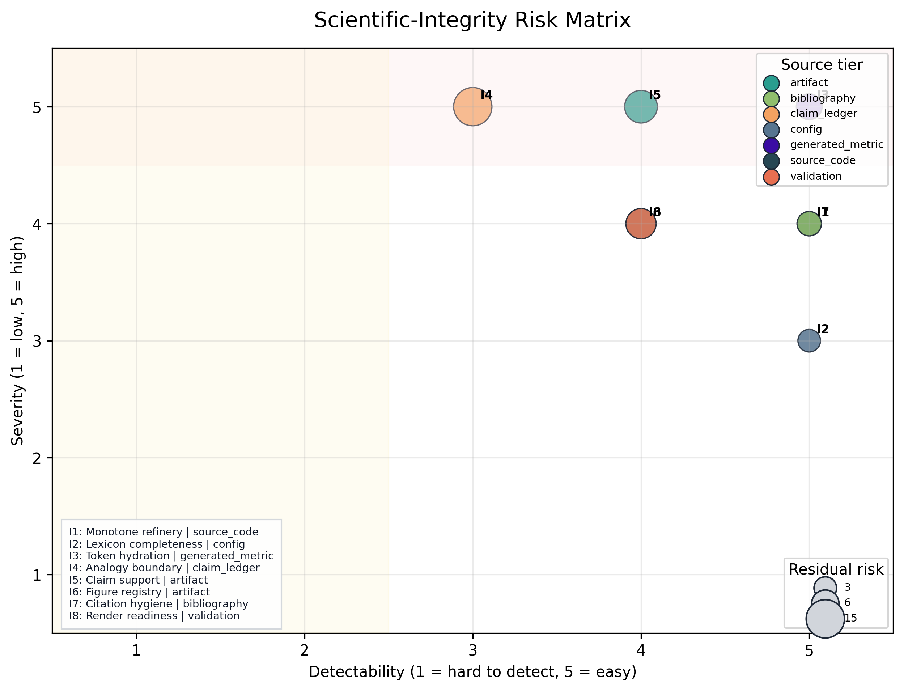
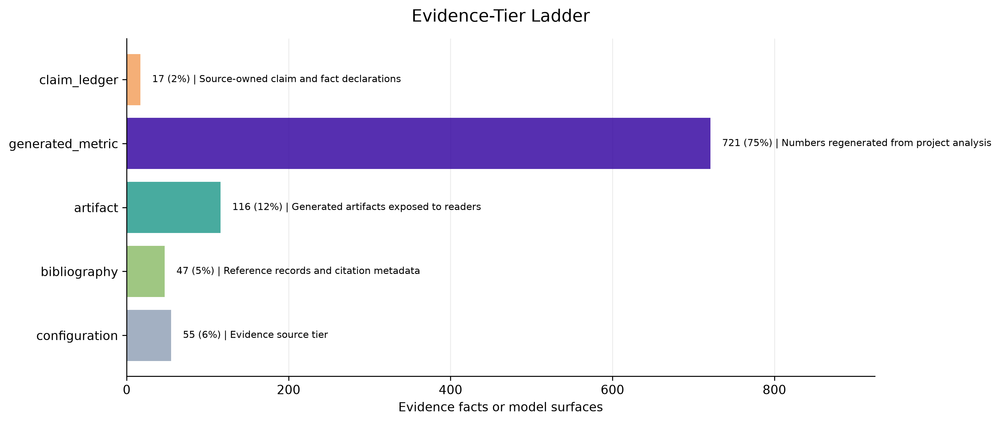

Results: Purity Progression and Karat Grading
The canonical run completed 5 ordered, continuous stages and reached the configured terminal state of 99.9999999% (nine-nines) (24K (nine-nines certified)). These values verify execution of the declared model; they are not empirical estimates of manuscript quality.
Purity progression

| Stage | Name | Output purity | Karat | Gain |
|---|---|---|---|---|
| 1 | ore | 37.50% | 9K | Extract raw gold-bearing ore from the earth |
| 2 | smelting | 75.00% | 18K | Heat ore to separate gold from slag and dross |
| 3 | assaying | 91.67% | 22K | Test a sample to determine gold content and impurities |
| 4 | cupellation | 99.900% | 24K | Refine by blowing air through molten lead-gold alloy |
| 5 | certification | 99.9999999% (nine-nines) | 24K (nine-nines certified) | Certify purity grade and stamp hallmark |
Karat grading scale

Final certification
- Final purity: 99.9999999% (nine-nines)
- Final karat: 24K (nine-nines certified)
- Total purity gain: 90.00%
- Nine-nines certified: Yes
- Nines count: 9
Token plan summary
The mega-madlib engine generated 24 tokens from seed 431 across 8 lexicon categories.

Category distribution
| Category | Count |
|---|---|
| boundary_terms | 4 |
| evidence_terms | 5 |
| gate_terms | 5 |
| integrity_terms | 2 |
| manuscript_terms | 2 |
| metallurgical_terms | 3 |
| purity_adjectives | 2 |
| refinement_verbs | 1 |
Section distribution
| Section | Token count |
|---|---|
| authoring_contract | 2 |
| discussion | 3 |
| evaluation | 2 |
| introduction | 2 |
| methodology | 8 |
| reproducibility | 2 |
| results | 5 |
Provenance trace
| Variable | Category | Value | Section | Source |
|---|---|---|---|---|
| AUTHORING_BOUNDARY_TERM_1 | boundary_terms | analogy boundary | authoring_contract | manuscript/config.yaml#gold_refinement.lexicon.boundary_terms[1] |
| AUTHORING_BOUNDARY_TERM_2 | boundary_terms | non-claim | authoring_contract | manuscript/config.yaml#gold_refinement.lexicon.boundary_terms[4] |
| DISCUSSION_BOUNDARY_TERM_1 | boundary_terms | fork obligation | discussion | manuscript/config.yaml#gold_refinement.lexicon.boundary_terms[2] |
| DISCUSSION_BOUNDARY_TERM_2 | boundary_terms | domain validator | discussion | manuscript/config.yaml#gold_refinement.lexicon.boundary_terms[3] |
| DISCUSSION_REFINEMENT_VERB | refinement_verbs | smelting | discussion | manuscript/config.yaml#gold_refinement.lexicon.refinement_verbs[3] |
| EVALUATION_GATE_TERM_1 | gate_terms | prerender | evaluation | manuscript/config.yaml#gold_refinement.lexicon.gate_terms[0] |
| EVALUATION_GATE_TERM_2 | gate_terms | citation validation | evaluation | manuscript/config.yaml#gold_refinement.lexicon.gate_terms[3] |
| INTRO_INTEGRITY_TERM_1 | integrity_terms | source tier | introduction | manuscript/config.yaml#gold_refinement.lexicon.integrity_terms[1] |
| INTRO_INTEGRITY_TERM_2 | integrity_terms | evidence spine | introduction | manuscript/config.yaml#gold_refinement.lexicon.integrity_terms[0] |
| METHOD_GATE_TERM_1 | gate_terms | evidence validation | methodology | manuscript/config.yaml#gold_refinement.lexicon.gate_terms[1] |
| METHOD_GATE_TERM_2 | gate_terms | figure registry check | methodology | manuscript/config.yaml#gold_refinement.lexicon.gate_terms[2] |
| METHOD_GATE_TERM_3 | gate_terms | citation validation | methodology | manuscript/config.yaml#gold_refinement.lexicon.gate_terms[3] |
| METHOD_MANUSCRIPT_TERM_1 | manuscript_terms | evidence | methodology | manuscript/config.yaml#gold_refinement.lexicon.manuscript_terms[4] |
| METHOD_MANUSCRIPT_TERM_2 | manuscript_terms | evidence | methodology | manuscript/config.yaml#gold_refinement.lexicon.manuscript_terms[4] |
| METHOD_METAL_TERM_1 | metallurgical_terms | assaying | methodology | manuscript/config.yaml#gold_refinement.lexicon.metallurgical_terms[1] |
| METHOD_METAL_TERM_2 | metallurgical_terms | parting | methodology | manuscript/config.yaml#gold_refinement.lexicon.metallurgical_terms[3] |
| METHOD_METAL_TERM_3 | metallurgical_terms | smelting | methodology | manuscript/config.yaml#gold_refinement.lexicon.metallurgical_terms[2] |
| REPRO_EVIDENCE_TERM_1 | evidence_terms | fact registry | reproducibility | manuscript/config.yaml#gold_refinement.lexicon.evidence_terms[0] |
| REPRO_EVIDENCE_TERM_2 | evidence_terms | figure registry | reproducibility | manuscript/config.yaml#gold_refinement.lexicon.evidence_terms[3] |
| RESULTS_EVIDENCE_TERM_1 | evidence_terms | artifact manifest | results | manuscript/config.yaml#gold_refinement.lexicon.evidence_terms[1] |
| RESULTS_EVIDENCE_TERM_2 | evidence_terms | figure registry | results | manuscript/config.yaml#gold_refinement.lexicon.evidence_terms[3] |
| RESULTS_EVIDENCE_TERM_3 | evidence_terms | token provenance | results | manuscript/config.yaml#gold_refinement.lexicon.evidence_terms[4] |
| RESULTS_PURITY_ADJ_1 | purity_adjectives | unrefined | results | manuscript/config.yaml#gold_refinement.lexicon.purity_adjectives[0] |
| RESULTS_PURITY_ADJ_2 | purity_adjectives | purified | results | manuscript/config.yaml#gold_refinement.lexicon.purity_adjectives[1] |
Selected purity adjectives for this section: unrefined, purified. Selected evidence terms: artifact manifest, figure registry, token provenance.
Provenance flow
The provenance flow in [@fig:provenance_sankey] makes
the refinement analogy auditable as a directed source path rather than a
decorative metaphor. The graph starts from the same stage sequence used
in the purity table and carries that sequence forward to certification,
with edge width proportional to the purity gain owned by
src/refinery.py::run_refinery. A reader can therefore ask
where each improvement enters the pipeline and whether it is supported
by the same source that generated the reported purity numbers.
The main result is structural: certification is not allowed to appear as a terminal label detached from the intermediate stages. It is only reached after the upstream transformations have been generated, ordered, and connected. This matters for the manuscript contract because provenance is doing more than recording file paths. It is preserving causal custody from raw material through assay and final certification, so a later change to the stage model must move through the same graph, table, and validation surfaces.

Purity vs claim support
The purity-versus-claim-support view in [@fig:purity_claim_scatter] places two differently scoped measurements on explicit axes: stage output purity on the horizontal axis and the single project-level contribution-claim assay on the vertical axis. The same observed support rate is therefore repeated across stages. The figure does not fabricate a stagewise claim-support trajectory from a project-level aggregate.
In the current generated assay, 9 of 9 contribution claims are supported (100.00%). The plot is diagnostic rather than correlational: five stage states and one ledger-level rate do not constitute independent observations suitable for association testing. Its purpose is to reveal disagreement between a late refinery state and weak overall claim support without combining the two into one score.

Token selection sensitivity
The token selection heatmap in [@fig:token_heatmap] turns the
mega-madlib engine into an inspectable sensitivity surface. The
manuscript uses seed 431 for the reported token plan, but the figure
asks a neighboring question: how do selected inventory indices move when
seeds and lexicon categories vary? This is not a stochastic robustness
claim. It is a deterministic audit of the digest rule in
src/composition.py::generate_token_plan against the
configured lexicon inventories in
manuscript/config.yaml.
This view separates three issues that prose alone tends to blur. First, token injection is reproducible: the same seed and inventory generate the same choices. Second, the available vocabulary is a real input surface: a thin or unbalanced category would be visible as a constrained selection band. Third, render-time hydration is not silently sampling new language. The heatmap therefore protects the manuscript from a common generative-writing failure mode, where a polished section appears stable but its wording is actually controlled by hidden or late-bound choices. The result is a sensitivity check on authoring machinery, not a claim that any particular synonym is scientifically superior.

Integrity gate matrix
The integrity gate matrix in [@fig:integrity_gate_matrix] makes the validation story visible: audit rules are not prose promises unless they connect to tests, manuscript surfaces, and generated artifacts.
Each row begins as a configured audit rule, but the matrix asks whether that rule has enough contact with the project to matter. A rule that names a risk but does not touch tests, manuscript text, or generated outputs remains advisory. A rule that reaches all three surfaces becomes enforceable: tests can fail, manuscript hydration can expose stale or missing variables, and generated reports can show whether the artifact exists. The matrix is therefore a map of operational coverage, not a checklist of intentions.
This is the validation story that supports the broader purity analogy. Smelting can remove obvious dross, but scientific-integrity failures often survive as well-written unsupported claims, stale tables, or figures that no longer match their source data. By separating missing, partial, and full coverage across gate surfaces, [@fig:integrity_gate_matrix] identifies where a future author would need to add a test, generated artifact, or manuscript variable before strengthening a claim. The result is intentionally local to this exemplar: coverage is measured against the specific audit rules configured here, not against a universal publication-readiness standard.

Formalism traceability
The formalism traceability view in [@fig:formalism_traceability] links each equation-backed formalism to the source surface that owns it. This is the visual counterpart to [@tbl:formalism_registry].
The registry currently exposes 7 source-owned formalisms. The figure
makes their ownership legible by linking each formalism to its equation
identifier and to the source surface that emits it. That linkage is
important because equation labels can otherwise create a false sense of
rigor: a numbered equation looks formal even when its assumptions,
variables, and implementation owner are not recoverable. Here the formal
object must remain connected to src/formalisms.py, the
generated registry table, and the manuscript reference that consumes
it.
The graph also helps distinguish formal support from decorative notation. A formalism earns a place in the manuscript only when it names a claim boundary or computation that the source can regenerate. If an equation is added without a source owner, it should fail this traceability pattern before it becomes part of the results narrative. Conversely, if the source registry changes, the visual traceability layer should change with it. That is the desired behavior: the formal layer is a generated contract, not hand-maintained mathematical ornamentation.

Implementation circuit
The implementation circuit in [@fig:implementation_circuit] shows how the concept is executed rather than merely described. Configuration feeds code; code emits variables, figures, and reports; manuscript hydration consumes those artifacts; validators feed errors back to source ownership. The figure is intentionally circular because the artifact is not complete after prose generation. It is complete only after the validation return path has no blocking evidence, citation, reference, or render failures.
The circuit is the results section’s strongest guard against a
prose-only interpretation of the template. It shows four layers that
must remain connected: configuration, project code, generated artifacts,
and validation feedback. A change in manuscript/config.yaml
is not complete when the file is saved. It must pass through source
functions, generate updated variables and figures, hydrate the
manuscript, and survive the validator return path. The circular layout
is therefore a process claim: the manuscript is complete only when the
loop closes without unresolved failures.
This view also explains why the exemplar treats generated output as disposable but not optional. Output files are not edited by hand, yet they are the evidence surface through which the reader and validators inspect the source contract. When a validator reports a broken citation, missing figure, stale variable, or unsupported claim, the circuit points backward to the owning source surface rather than encouraging local patching of rendered Markdown. That direction of repair is central to the manuscript’s definition of refinement.

Claim-evidence assay
The claim-evidence assay in [@fig:claim_evidence_assay]
turns the assaying stage into a reader-facing diagnostic. Each bar is a
contribution claim from manuscript/config.yaml, and each
annotation names the source file or symbol used to support it. This
makes the contribution ledger inspectable at the same level as the
purity plots: unsupported claims would appear as failed assays rather
than remaining hidden in prose.
The generated assay currently reports 9 supported claims out of 9. The value of the figure is not the perfect score by itself; it is the way the score is forced to name its evidence surface and boundary. A contribution claim is not merely present in prose. It must be registered, matched to supporting evidence, and assigned a boundary that tells the reader what the support does not cover. This keeps contribution language from drifting beyond the local evidence available in the project.
The bar-plus-topology design makes two failure modes visible. If a claim lacks support, the bar view would show the failed assay directly. If a claim is supported only within a narrow scope, the graph side still preserves the boundary classification rather than flattening the result into a binary pass. That matters for the security and integrity extensions in this manuscript: a claim can be source-owned without becoming a compliance claim, and a generated assay can confirm local evidence without pretending to certify the wider supply chain.

Scientific-integrity risk matrix
The integrity risk matrix in [@fig:integrity_risk_matrix] plots severity against detectability for the 9 integrity dimensions in [@tbl:integrity_dimensions]. Bubble size encodes residual risk, while color encodes the source tier that owns the evidence surface. This makes boundary failures more visible than cosmetic source checks without hiding whether the support comes from config, source code, claim ledger, generated metric, artifact, bibliography, or validation gate. The matrix is intentionally local: it prioritizes where this exemplar needs source ownership, not where every future manuscript should focus.
The generated summary is: 9 integrity dimensions; highest residual risk is I4 (Analogy boundary) at 15. The matrix turns that summary into a triage surface. Severity asks how damaging a failure would be if it entered the manuscript. Detectability asks how readily the current project would catch it. Residual risk then becomes visible as size rather than being buried in a paragraph. A large point in a hard-to-detect region is a signal that the authoring contract needs stronger source ownership or a clearer boundary, even if the current text renders successfully.
Color is equally important because not all evidence tiers have the same authority. A bibliography-backed statement, a source-code computation, a claim ledger row, and a validation-gate result can all support prose, but they support different kinds of claims. The risk matrix keeps that distinction visible. It does not collapse integrity into a single score, and it does not imply that every high-severity issue has already been eliminated. It shows which risks this exemplar has made inspectable and where future work would need to add stronger measurement before using stronger language.

Evidence-tier ladder
The evidence-tier ladder in [@fig:evidence_tier_ladder] summarizes the evidence surfaces available to the shared template evidence registry or, before that gate has run, the fallback source tiers from the integrity model. It gives a quick view of whether the manuscript is leaning on generated metrics, claim-ledger facts, bibliography records, source code, or disposable artifacts.
The ladder complements the risk matrix by counting source tiers rather than plotting risks. When the shared evidence registry is available, the manuscript can report 956 source-tiered facts to the validation surface. When that registry is not available, the same figure falls back to the integrity model’s configured tiers. Either way, the reader sees the evidentiary mix instead of receiving an undifferentiated assurance that evidence exists.
This matters because evidence balance is itself an integrity signal. A manuscript that leans only on generated artifacts may be reproducible but weakly grounded in source rationale. A manuscript that leans only on bibliography may be well-cited but not locally executable. A manuscript that leans only on tests may catch regressions while still failing to explain claim boundaries to readers. The ladder gives a compact audit of that mix, while [@tbl:evidence_tiers] keeps the counts visible in tabular form. Together they close the figure sequence by showing not only that the 12 public figures render, but also which source tiers make their claims inspectable.

| Source tier | Count | Role |
|---|---|---|
| generated_metric | 721 | Numbers regenerated from project analysis |
| artifact | 116 | Generated artifacts exposed to readers |
| configuration | 55 | Evidence source tier |
| bibliography | 47 | Reference records and citation metadata |
| claim_ledger | 17 | Source-owned claim and fact declarations |
Adversarial security assay
The adversarial assay reports 5 adversarial assay rows, 5
schema-complete, mapping threats and standards to local evidence
surfaces, validators, and claim boundaries; completeness is a scope
control, not completed scan findings. No Codex Security or Deep Security
Scan findings are claimed unless a scan artifact is generated,
validated, and cited. The rows are generated from
gold_refinement.security_assay and are intentionally
tabular rather than a new public figure, so the visual registry remains
the stable 12-figure contract.
| ID | Threat | Standard or guidance | Evidence surface | Validator or gate | Claim boundary |
|---|---|---|---|---|---|
| S1 | implicit trust in generated artifacts | NIST SP 800-207 zero trust | output/reports/evidence_registry.json and src/security_assay.py | infrastructure.validation.cli evidence –fail-on-issues | documents a verification posture, not a deployed zero-trust architecture |
| S2 | incomplete secure-development evidence | NIST SP 800-218 secure software development framework | tests/, pre-render validation, and claim ledger | project test suite and template validation gates | maps local practices to SSDF concepts without claiming SSDF compliance |
| S3 | supply-chain or build provenance compromise | SLSA v1.2, Sigstore, SPDX, and CycloneDX | config hash, artifact counts, and publication metadata | pipeline regeneration and artifact registry checks | identifies provenance requirements but does not assert signed SBOM or provenance is present |
| S4 | unvalidated vulnerability narrative | MITRE ATT&CK and Codex Security scan phases | security assay table and future scan artifacts | Codex Security threat-model, discovery, validation, and attack-path receipts when run | no real scan finding is claimed in this manuscript pass |
| S5 | secure-by-design overclaim | CISA Secure by Design | authoring contract and scope limitations | human source review plus citation and evidence validation | uses guidance to bound responsibilities, not to certify product security |
Contribution claims
| Claim | Statement | Evidence | Boundary |
|---|---|---|---|
| Five-stage refinery | The refinery pipeline has 5 canonical stages from ore to nine-nines. | src/refinery.py::CANONICAL_STAGES | local |
| Monotone purity | Purity increases strictly across all refinery stages. | src/purity.py::assert_monotone_increase | local |
| Nine-nines certification | The certification stage achieves 99.9999999% purity. | src/purity.py::NINE_NINES_PURITY | local |
| Deterministic tokens | Token selection is deterministic via seeded SHA-256 digest. | src/composition.py::_choose_value | local |
| Formalism registry | The manuscript exposes 7 source-owned formalisms with equation labels. | src/formalisms.py::FORMALISMS | local |
| Claim-support report separation | The project-local contribution-claim report is written to claim_support_registry.json. | scripts/refinement_analysis.py::CLAIM_SUPPORT_REGISTRY_NAME | local |
| Implementation-linked visualizations | The manuscript includes generated visualizations that link the refinery analogy to source code, variables, evidence, and validation gates. | src/figures/diagrams.py::generate_implementation_circuit | local |
| Scientific-integrity risk model | The manuscript includes a source-owned integrity risk model linking failure modes, validators, evidence surfaces, and fork obligations. | src/integrity.py::build_integrity_dimensions | local |
| Adversarial security assay | The manuscript includes a source-owned security assay mapping adversarial threats and standards to local evidence surfaces, validators, and claim boundaries. | src/security_assay.py::build_security_assay | local |
The project-local claim-support assay reports 9 supported claims out
of 9 total claims, for 100.00% support. Unsupported claims: 0. The
generated project report path is
output/reports/claim_support_registry.json; the shared
template evidence report remains
output/reports/evidence_registry.json.
Shared evidence registry summary
When the template evidence gate has run, the shared registry supplies source-tiered facts used by the evidence validator. Current fact count available to this variable pass: 956.
| Fact kind | Count |
|---|---|
| artifact | 72 |
| citation | 47 |
| equation | 8 |
| figure | 28 |
| number | 784 |
| section | 10 |
| table | 7 |
Figure quality report
The visualization registry is paired with
output/reports/figure_quality_report.json, a generated QA
report that checks PNG and SVG existence, file dimensions, nonblank
pixel mass, color variance, and registry parity. Current status: passing
with 12/12 registered figures passing and registry parity reported as
Yes. PNG remains the manuscript render path; SVG is the companion
technical artifact for inspection, reuse, and source-level debugging.
[@tbl:figure_quality] summarizes
the generated surface.
| Figure | PNG | SVG | Dimensions | Nonwhite | Variance | Status |
|---|---|---|---|---|---|---|
| claim_evidence_assay | yes | yes | 3947x2038 | 0.218 | 0.06041014 | pass |
| evidence_tier_ladder | yes | yes | 3420x1447 | 0.111 | 0.04019577 | pass |
| formalism_traceability | yes | yes | 3315x1797 | 0.140 | 0.04409869 | pass |
| implementation_circuit | yes | yes | 2966x1842 | 0.068 | 0.02214905 | pass |
| integrity_gate_matrix | yes | yes | 1833x2060 | 0.406 | 0.16147143 | pass |
| integrity_risk_matrix | yes | yes | 2499x1909 | 0.379 | 0.01892053 | pass |
| karat_grading | yes | yes | 2956x1699 | 0.279 | 0.07296687 | pass |
| provenance_sankey | yes | yes | 2850x1461 | 0.070 | 0.02170098 | pass |
| purity_claim_scatter | yes | yes | 2343x1745 | 0.034 | 0.01594966 | pass |
| purity_progression | yes | yes | 3029x2125 | 0.182 | 0.03971092 | pass |
| token_density | yes | yes | 3288x1858 | 0.234 | 0.06696808 | pass |
| token_heatmap | yes | yes | 2406x2412 | 0.621 | 0.12867696 | pass |